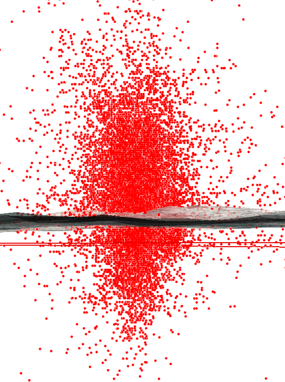

GPS
in Research
in the Urban Environment

In 2011 NYC DOH collected GPS and Accelormeter data for 803 NYers
Built Environment and Health Research Group (Rundle, Neckerman, Quinn...)
Traditionally, public health studies looked at home (maybe work) address radial and network buffers or admin. bounds.


While neighborhood contextualization with GPS was a novel approach, mode detection and quantifiying distance traveled with GPS-only proved difficult.
Use of global positioning system (GPS) technology has become more commonly deployed for data collection in epidemiology and public health studies.
However, in dense urban environments, GPS measurements are highly prone to error as signals bounce off large buildings and other structures.
Formally defined as multipath error, these reflections increase the distance that the GPS signal must travel to reach the receiver—causing miscalculations in position.
Multipath problems can result in locations that seemingly wander or jump as the signal is dropped and regained.
Multipath Error


Although the error associated with these split second delays may seem negligible, the multipath phenomena can substantially impact positional accuracy and tracking measurements.
This location may be influenced by multipath error differently than...

...this location.

Built Environment and Health
Research Group at Columbia Univ.
Disclaimer: Student and volunteer data, no students were harmed during these experiments!
Testing:
GlobalSat DG-100

Grad students, take a hike walk!
We hypothesized...


Recommendations:
Add. studies (Lovasi)-GPS deployment in Rio Das Pedras

GPS at home location (side profile)
Thanks:
Thanks! could keep going if additional time or end!
A map of all dropoff and pickup GPS points in 2013 (starts of trips in blue and the ends in orange on this map:) New York City taxi trips - Eric Fisher, Mapbox. Note points in water and over where buildings are.
Taxi Pickups/Dropoffs Roadbed Diagram

Midtown (symbolized by dist. from roadbed) in QGIS

Average Distance to Roadbed
Calculating Distance (arcpy.GenerateNearTable_analysis) from Pickup/Dropoffs to Nearest Roadbed feature, OGR-GDAL and Pandas IPython Notebooks for Data Munging.
More work, matching to...
But promising first pass results...
Every 1-unit increase in distributed building height was associated with approximately a 17% increase in distance from roadbed
0.17, 95% CI = 0.15 - 0.19, Adjusted R-squared 0.0089(Bruzelius)
Learn More: